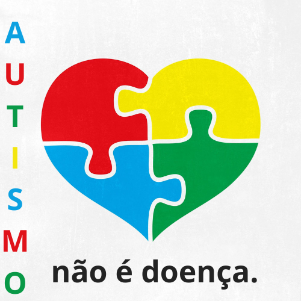

Transtorno do Espectro Autista (TEA)
O Transtorno do Espectro do Autismo (TEA) ou autismo, é um transtorno do neurodesenvolvimento que traz prejuízos na comunicação e interação social e no comportamento da criança.Sinais de alerta no neurodesenvolvimento da criança podem ser percebidos nos primeiros meses de vida, sendo o diagnóstico estabelecido por volta dos 2 a 3 anos de idade.A prevalência é maior no sexo masculino.
Portanto, pode interferir na forma como ela percebe o mundo ao redor e interage com os outros, ocasionando esses desafios sociais. O autismo trata-se de uma condição crônica, de uma deficiência neurológica, e não de uma doença. Inicialmente, o autismo era enquadrado como uma forma de esquizofrenia, o que levou à crença de que poderia ter sua causa ligada a alguma experiência negativa ou por consequência de má criação dos pais ou responsáveis. Mas, este conceito já foi mais do que refutado pela ciência.
Causa do Autismo
Pesquisas mostram que não há um fator único, mas sim a interação de componentes genéticos e ambientais.Uma pesquisa da USP cruzou dados de pacientes e mostrou que a exposição da gestante a fatores ambientais e psicossociais (como estresse, exposição a produtos químicos e perda de um ente querido, por exemplo) pode aumentar a possibilidade do desenvolvimento do autismo nos filhos.O doutorado, realizado pela neurocientista Anita Brito, do Instituto de Ciências Biomédicas (ICB) da USP, em parceria com a Plataforma Científica Pasteur (SSPU) da USP – recentemente transformada em Institut Pasteur de São Paulo – e com o Instituto de Psiquiatria (IPq) da Faculdade de Medicina da USP (FMUSP), investigou, pela primeira vez, a relação entre fatores genéticos e ambientais e o Transtorno do Espectro Autista (TEA).
Graus
Nível 3: severo (necessitam de maior suporte/apoio)
Diz respeito àqueles que apresentam um déficit considerado grave nas habilidades de comunicação verbais e não verbais. Ou seja, não conseguem se comunicar sem contar com suporte. Com isso apresentam dificuldade nas interações sociais e tem cognição reduzida.Também possuem um perfil inflexível de comportamento, tendo dificuldade de lidar com mudanças.Tendem ao isolamento social, se não estimulados.
Nível 2: moderado (necessitam de suporte)
Semelhante às características descritas no nível 3, mas com menor intensidade no que cabe aos transtornos de comunicação e deficiência de linguagem.
Nível 1: leve (necessita de pouco suporte)
Com suporte, pode ter dificuldade para se comunicar, mas não é um limitante para interações sociais. Problemas de organização e planejamento impedem a independência.É importante saber que, embora estejam estabelecidos desta forma (níveis 1, 2 e 3), ainda não está bem claro de fato o que e sob quais circunstâncias pode ser compreendido o significado de “suporte”. Por exemplo: algumas pessoas com TEA desenvolvem bem em casa, mas precisam de ajuda na escola (onde as demandas são específicas e intensas). Outras pessoas o contrário.